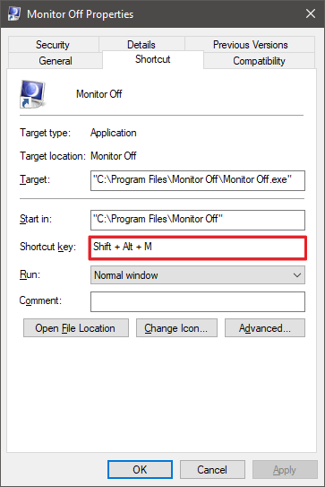

Monitor Off

About:
This is a simple program I created to turn off my monitor on Windows. Previously, I used to use nircmd to turn my monitor off, but I wanted to figure out how to do it myself and write my own simple program which can do that.
This program is useful to me because it would help me save battery life on my laptop by allowing me to turn the screen off when it wasn't necessary to have it on.
This program takes 1 argument, which will be the delay in milliseconds before the monitor is to be turned off. By default, it will wait 1 second to turn off the monitor.
Binding this to a hotkey in Windows:
In order to bind this program to a keyboard shortcut in Windows, a shortcut needs to be created and placed in one of the start menu folders:
%appdata%\Microsoft\Windows\Start Menu\Programs
%programdata%\Microsoft\Windows\Start Menu\Programs
Then, in the properties of the shortcut, a keyboard shortcut can be assigned:
Alternatively, a shortcut can be placed on the taskbar instead. I think it looks quite fitting down there. Also, Win + 1 can be used if it's the first icon on the taskbar.
Turning off the monitor on Linux:
Here's a simple bash script that I used to turn off my monitor on Linux with:
#!/bin/bash sleep 1s xset dpms force off
Saving the above text to a file and giving the file permission to execute is all that needs to be done.
Icon Credit:
This icon is located inside of system32\imageres.dll and is created by Microsoft.